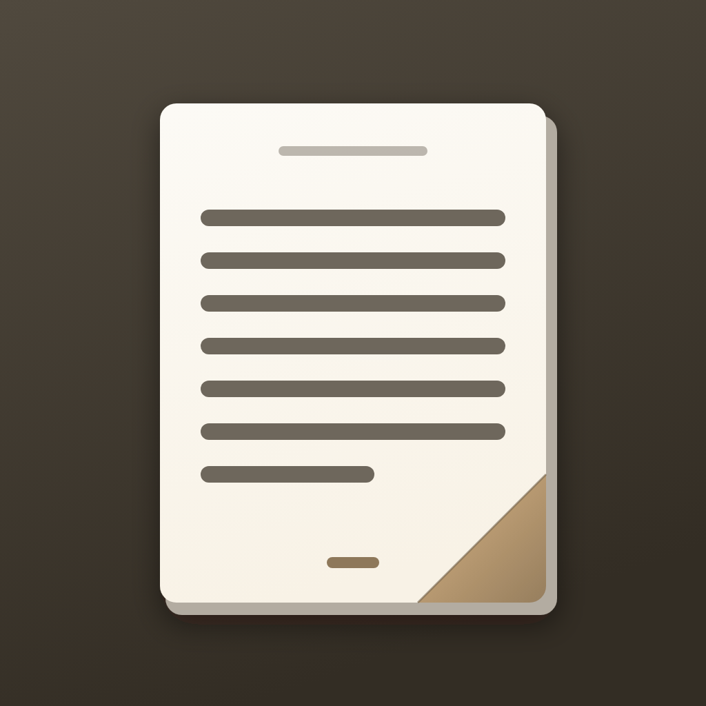

Reader
Books, catalogs, and volume-key page turns.
Add to SideStore
Only works once SideStore is installed. If nothing happens, add this by hand
under Sources → +
https://alexazartsev.github.io/reader-dist/source.json
First time
- Install SideStore — it needs a computer once, to make a pairing file.
- Open SideStore → Sources → + → paste the address above.
- Open Reader in that source and tap Free to install.
Keeping it alive
- A free Apple ID signs an app for 7 days. SideStore re-signs it on the phone before that runs out.
- Open SideStore every few days and let it refresh. Nothing is lost if it lapses — reinstalling keeps the library.
- When a new version is published it shows up here as an update.